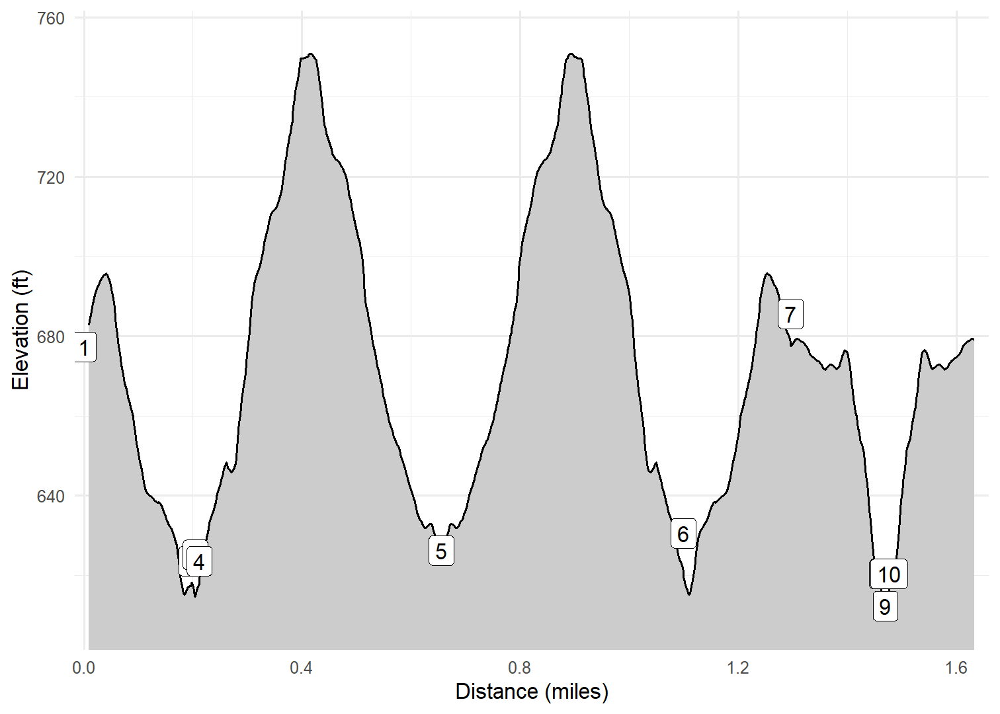

Temperance River Loop
Temperance River State Park
A favorite stop on our anniversary trips is Tettegouche State Park. A favorite hike here is to head out to Shovel Point, with several stops at the overlooks, and then over to the mouth of the Baptism River. We have hiked the trails inland in the past but I did not record tracks.
Walk-Specific Map
Take Note
- Click on a segment to get specific information.
- Numeric labels correspond to the same labels in the elevation profile and summary information below.
Elevation Profile

Images

MNSHVLP02: South towards Palisades Head

MNSHVLP02: Cash at First Overlook

MNSHVLP02: Cash and I on Shovel Point

MNSHVLP09: South towards Palisades Head

MNTGCH09: North towards Shovel Point
GPX Download
A sanitized GPX file of our hike is here.
Summary Information
| NUM | trackID | Primary | Description | Type | Distance | CumDist | DeltaElev |
|---|---|---|---|---|---|---|---|
| 1 | MNSHVLP01 | Shovel Point Trail | Tettegouche SP Visitor Center to Overlook spur | Trail | 0.20 | 0.20 | -47 |
| 2 | MNSHVLP09 | Shovel Point Trail (Overlook spur) | to Shovel Point Trail | Trail | 0.01 | 0.20 | 2 |
| 3 | MNSHVLP09 | Shovel Point Trail (Overlook spur) | Shovel Point Trail to | Trail | 0.01 | 0.21 | -2 |
| 4 | MNSHVLP02 | Shovel Point Trail | Overlook spur to Shovel Point Observation Deck | Trail | 0.44 | 0.66 | 3 |
| 5 | MNSHVLP02 | Shovel Point Trail | Shovel Point Observation Deck to Overlook spur | Trail | 0.44 | 1.10 | -3 |
| 6 | MNSHVLP01 | Shovel Point Trail | Overlook spur to Tettegouche SP Visitor Center | Trail | 0.20 | 1.30 | 47 |
| 7 | MNTGCH01 | Tettegouche Trail | Tettegouche SP Visitor Center to Overlook spur | Trail | 0.17 | 1.46 | -65 |
| 8 | MNTGCH09 | Tettegouche Trail (Overlook spur) | Tettegouche Trail to Baptism River Overlook | Trail | 0.01 | 1.47 | -8 |
| 9 | MNTGCH09 | Tettegouche Trail (Overlook spur) | Baptism River Overlook to Tettegouche Trail | Trail | 0.01 | 1.48 | 8 |
| 10 | MNTGCH01 | Tettegouche Trail | Overlook spur to Tettegouche SP Visitor Center | Trail | 0.17 | 1.64 | 65 |